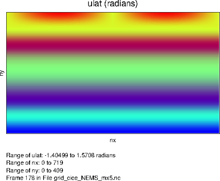
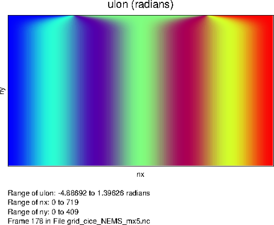

|
Los Alamos Sea Ice (CICE) NUOPC Cap
|
|
Los Alamos Sea Ice (CICE) NUOPC Cap
|
This CICE cap has been tested with versions 4.0 and 5.0.2 of CICE.
This document describes the CICE "cap", which is a small software layer that is required when the Los Alamos sea ice model is used in National Unified Operation Prediction Capability (NUOPC) coupled systems. The NUOPC Layer is a software layer built on top of the Earth System Modeling Framework (ESMF). ESMF is a high-performance modeling framework that provides data structures, interfaces, and operations suited for building coupled models from a set of components. NUOPC refines the capabilities of ESMF by providing a more precise definition of what it means for a model to be a component and how components should interact and share data in a coupled system. The NUOPC Layer software is designed to work with typical high-performance models in the Earth sciences domain, most of which are written in Fortran and are based on a distributed memory model of parallelism (MPI). A NUOPC "cap" is a Fortran module that serves as the interface to a model when it's used in a NUOPC-based coupled system. The term "cap" is used because it is a small software layer that sits on top of model code, making calls into it and exposing model data structures in a standard way. For more information about creating NUOPC caps in general, please see the Building a NUOPC Model how-to document.
The CICE cap package contains a single Fortran source file and two makefiles. The Fortran source file (cice_cap.F90) implements a standard Fortran module that uses ESMF and NUOPC methods and labels to create a NUOPC cap for CICE. It also uses variables and subroutines from CICE modules to invoke CICE subroutines and exchange data. In the simplest terms, the CICE cap should be thought of as a thin translation layer between the CICE Fortran code and the NUOPC infrastrucutre. The source file can be built into a linkable library and Fortran module file (.mod) for inclusion in other Fortran programs.
The CICE cap Fortran module contains a set of subroutines that are required by NUOPC. These subroutines are called by the NUOPC infrastructure according to a predefined calling sequence. Some subroutines are called during initialization of the coupled system, some during the run of the coupled system, and some during finalization of the coupled system. The initialization sequence is the most complex and is governed by the NUOPC technical rules. Details about the initialization sequence can be found in the NUOPC Reference Manual.
A particularly important part of the NUOPC intialization sequence is to establish field connections between models. Simply put, a field connection is established when a field output by one model can be consumed by another. As an example, the CICE model is able to accept a precipitation rate when coupled to an atmosphere model. In this case a field connection will be established between the precipitation rate exported from the atmosphere and the precipitation rate imported into the CICE model. Because models may uses different variable names for physical quantities, NUOPC relies on a set of standard names and a built-in, extensible standard name dictionary to match fields between models. More information about the use of standard names can be found in the NUOPC Reference Manual.
Two key initialization phases that appear in every NUOPC cap, including this CICE cap are the field "advertise" and field "realize" phases. Advertise is a special NUOPC term that refers to a model participating in a coupled system providing a list of standard names of required import fields and available export fields. In other words, each model will advertise to the other models which physical fields it needs and which fields it can provide when coupled. NUOPC compares all of the advertised standard names and creates a set of unidirectional links, each from one export field in a model to one import field in another model. When these connections have been established, all models in the coupled system need to provide a description of their geographic grid (e.g., lat-lon, tri-polar, cubed sphere, etc.) and allocate their connected fields on that grid. In NUOPC terms, this is refered to as realizing a set of fields. NUOPC relies on ESMF data types for this, such as the ESMF_Grid type, which describes logically rectangular grids and the ESMF_Field type, which wraps a models data arrays and provides basic metadata. Because ESMF supports interpolation between different grids (sometimes called "regridding" or "grid remapping"), it is not necessary that models share a grid. As you will see below the advertise and realize phases each have a subroutine in the CICE cap.
The following table summarizes the NUOPC-required subroutines that appear in the CICE cap. The "Phase" column says whether the subroutine is called during the initialization, run, or finalize part of the coupled system run.
| Phase | CICE Cap Subroutine | Description |
|---|---|---|
| Init | InitializeP0 | Sets the Initialize Phase Definition (IPD) version to use |
| Init | InitializeAdvertise | Advertises standard names of import and export fields |
| Init | InitializeRealize | Creates an ESMF_Grid for the CICE grid as well as ESMF_Fields for import and export fields |
| Init | SetClock | Before the run, sets up the timestep interval |
| Run | ModelAdvance_Slow | Advances the model by a timestep by calling CICE_Run |
| Final | CICE_Model_Finalize | Cleans up by calling CICE_Finalize |
The following diagram shows a diagram of how the CICE cap code is structured. Red boxes are subroutines that are registered with NUOPC. Light blue boxes are calls into CICE subroutines. Yellow boxes are calls into the ESMF/NUOPC library.
As outlined in section 4.2 of the CICE user's guide, the CICE model supports several kinds of grids: regular rectangular, regional, displaced_pole, and tripolar. The CICE cap currently only supports the tripolar grid with a single southern pole and a bipole in northern latitudes. The plots below show the latitude and longitude coordinate values (radians) for a 0.5 degree (720x410 cells) tripolar grid.

Latitude coordinates of tripolar grid |

Longitude coordinates of tripolar grid |
No changes were made to the native CICE mechanisms for setting up the grid. This procedure happens as part of the call to CICE_Initialize(). After CICE sets up its grid, the grid structure is translated into an ESMF_Grid object. Setting up the ESMF_Grid is handled as part of the InitializeRealize subroutine. All of the details of the tripolar grid must be provided to ESMF, including:
CICE already has data structures to represent all of these grid features. However, NUOPC infrastrucuture requires a standard representation of grids using ESMF types. Since the tripolar grid is a logically rectangular grid (there is an underlying X-Y index space), the ESMF_Grid type is used. Setting up the ESMF_Grid requires accessing some of the ice domain variables inside CICE. Refer to the "use" statements at the top of the cap (listed below) to see which domain variables are accessed by the cap.
The ESMF_Grid is set up in several steps inside InitializeRealize. The deBlockList variables is used to store the min and max indices of each decomposition block. This is populated using index values from the CICE subroutine get_block_parameters(). The petMap array is used to store, for each block, the processor that is assigned to that block. This information is retrieved by calling the CICE subroutine ice_distributionGetBlockLoc(). The petMap is then used to create an ESMF_DELayout, which describes how decomposition elements (blocks in CICE terms) are assigned to PETs (processors).
The global CICE grid index space (nx_global x ny_global) is set up as an ESMF_DistGrid by passing it the deBlockList, delayout, and a connectionList which defines the periodic boundary condition in the X direction and bipole at the top. Finally, the ESMF_Grid is created from the ESMF_DistGrid. The ESMF_Grid will use the index space defined by the ESMF_DistGrid and geographic coordinates are assigned to cell centers and corners. The center coordinates are populating using the CICE TLON and TLAT arrays and the corners using the ULON and ULAT arrays. Also assigned are the cell areas (using the tarea array) and the grid mask (using the hm array). Details of how the CICE grid is set up internally in the model is beyond the scope of this cap documentation, however the reader is refered to section 4.2 of the CICE user's guide for more information.
The CICE cap calls into the native CICE_Initialize() subroutine in the InitializeAdvertise subroutine. The only parameter passed is the MPI communicator. The global MPI communicator is managed by ESMF and is retrieved from the current ESMF_VM.
The CICE cap calls into the native CICE_Run() subroutine in the ModelAdvance_Slow subroutine. The internal CICE timestepping loop has been disabled when using the NUOPC cap since the main driver loop is provided by the NUOPC infrastructure at a level above the CICE model. Therefore, a call into CICE_Run() will only advance the CICE model by a single time step.
Prior to calling CICE_Run() the cap copies fields from the import ESMF_State into the corresponding data arrays inside the model. The import state contains a set of fields brought in through the NUOPC coupling infrastructure. These native model arrays are defined in the file ice_flux.F90. After copying in the import state fields, the call is made to CICE_Run(). After the run, model fields are copied into the export ESMF_State so that NUOPC can transfer these fields to other models as required.
Per field diagnostic output can be produced at the end of each run phase as described in the I/O section.
Vector rotation is done for import and export 2D vector fields in the NUOPC cap. In CICE cap, this happens inside of ModelAdvance_Slow. The vector fields are rotated from a regular lat-lon grid to the CICE grid before CICE_Run and then rotated back to regular lat-lon grid after CICE_Run. The effect of this is most obvious in the northern polar region where CICE operates on a tripolar grid. Results on the T cell are also transformed to the U cell through CICE internal method t2ugrid_vector.
The following assumptions are made during vector rotation:
As such, the imported vector field V must be rotated locally as the model component local coordinate system is rotated CCW from well-defined lat-lon directions. The CCW rotation matrix M is
cos \theta sin \theta -sin \theta cos \theta
Rotated vector V' = M V
The transpose of this matrix corresponding to a CW coordinate system rotation is applied to the exported 2D vector fields before they are exported.
To finalize the model, the CICE cap simple calls into the native CICE_Finalize() subroutine.
The following tables list the import and export fields currently set up in the CICE cap.
| Standard Name | Units | Model Variable | File | Description | Notes |
|---|---|---|---|---|---|
| air_density_height_lowest | kg m-3 | rhoa | ice_flux.F90 | air density | |
| freezing_melting_potential | W m-2 | frzmlt | ice_flux.F90 | freezing/melting potential | |
| inst_height_lowest | m | zlvl | ice_flux.F90 | height of lowest level | |
| inst_merid_wind_height_lowest | m-2 | vatm | ice_flux.F90 | wind v component | vector rotation applied |
| inst_pres_height_lowest | Pa | (none) | pressure at lowest level | used to calculate potT (potential temperature) | |
| inst_spec_humid_height_lowest | kg kg-1 | Qa | ice_flux.F90 | specific humidity | |
| inst_temp_height_lowest | K | Tair | ice_flux.F90 | near surface air temperature | |
| inst_zonal_wind_height_lowest | m-2 | uatm | ice_flux.F90 | wind u component | vector rotation applied |
| mean_down_lw_flx | W m-2 | flw | ice_flux.F90 | downward longwave flux | |
| mean_down_sw_vis_dir_flx | W m-2 | swvdr | ice_flux.F90 | downward shortwave visible direct flux | |
| mean_down_sw_vis_dif_flx | W m-2 | swvdf | ice_flux.F90 | downward shortwave visible diffuse flux | |
| mean_down_sw_ir_dir_flx | W m-2 | swidr | ice_flux.F90 | downward shortwave near infrared direct flux | |
| mean_down_sw_ir_dif_flx | W m-2 | swidf | ice_flux.F90 | downward shortwave near infrared diffuse flux | |
| mean_fprec_rate | kg m-2 s-1 | fsnow | ice_flux.F90 | snowfall rate | |
| mean_prec_rate | kg m-2 s-1 | frain | ice_flux.F90 | rainfall rate | |
| (none) | W m-2 | fsw | ice_flux.F90 | downward shortwave flux | cap sets fsw as sum of shortwave components |
| ocn_current_merid | m-2 | vocn | ice_flux.F90 | ocean current v component | vector rotation applied |
| ocn_current_zonal | m-2 | uocn | ice_flux.F90 | ocean current u component | vector rotation applied |
| sea_surface_temperature | C | sst | ice_flux.F90 | sea surface temperature | converted from Kelvin to Celcius |
| s_surf | ppt | sss | ice_flux.F90 | sea surface salinity | |
| sea_lev | m m-1 | ss_tltx, sstlty | ice_flux.F90 | sea surface slope in x & y | sea_lev used to compute slope components, then vector rotation applied, then t2ugrid_vectors() called to move slope components to U grid |
These fields are advertised as imports but not currently used by the cap:
| Standard Name | Units | Model Variable | File | Description | Notes |
|---|---|---|---|---|---|
| ice_fraction | 1 | aice | ice_state.F90 | concentration of ice | |
| ice_mask | hm | ice_grid.F90 | ice mask | 0.0 indicates land cell and 1.0 indicates ocean cell | |
| inst_ice_ir_dif_albedo | 1 | alidf | ice_flux.F90 | near infrared diffuse albedo | |
| inst_ice_ir_dir_albedo | 1 | alidr | ice_flux.F90 | near infrared direct albedo | |
| inst_ice_vis_dif_albedo | 1 | alvdf | ice_flux.F90 | visible diffuse albedo | |
| inst_ice_vis_dir_albedo | 1 | advdr | ice_flux.F90 | visible direct albedo | |
| mean_evap_rate_atm_into_ice | kg m-2 s-1 | evap | ice_flux.F90 | evaporative water flux | |
| mean_fresh_water_to_ocean_rate | kg m-2 s-1 | fresh | ice_flux.F90 | fresh water flux to ocean | |
| mean_ice_volume | m | vice | ice_state.F90 | volume of ice per unit area | |
| mean_laten_heat_flx_atm_into_ice | W m-2 | flat | ice_flux.F90 | latent heat flux | |
| mean_net_sw_ir_dif_flx | W m-2 | fswthruidf | ice_flux.F90 | near infrared diffuse shortwave penetrating to ocean | |
| mean_net_sw_ir_dir_flx | W m-2 | fswthruidr | ice_flux.F90 | near infrared direct shortwave penetrating to ocean | |
| mean_net_sw_vis_dif_flx | W m-2 | fswthruvdf | ice_flux.F90 | visible diffuse shortwave penetrating to ocean | |
| mean_net_sw_vis_dir_flx | W m-2 | fswthruvdr | ice_flux.F90 | visible direct shortwave penetrating to ocean | |
| mean_salt_rate | kg m-2 s-1 | fsalt | ice_flux.F90 | salt flux to ocean | |
| mean_sensi_heat_flx_atm_into_ice | W m-2 | fsens | ice_flux.F90 | sensible heat flux | |
| mean_snow_volume | m | vsno | ice_state.F90 | volume of snow per unit area | |
| mean_sw_pen_to_ocn | W m-2 | fswthru | ice_flux.F90 | shortwave penetrating to ocean | |
| mean_up_lw_flx_ice | W m-2 | flwout | ice_flux.F90 | outgoing longwave radiation | average over ice fraction only |
| net_heat_flx_to_ocn | W m-2 | fhocn | ice_flux.F90 | net heat flux to ocean | |
| sea_ice_temperature | K | trcr | ice_state.F90 | surface temperature of ice/snow | Celcius converted to Kelvin for export |
| stress_on_air_ice_merid | N m-2 | strairyT | ice_flux.F90 | y component of stress on ice by air | vector rotation applied |
| stress_on_air_ice_zonal | N m-2 | strairxT | ice_flux.F90 | x component of stress on ice by air | vector rotation applied |
| stress_on_ocn_ice_merid | N m-2 | strocnyT | ice_flux.F90 | y component of stress on ice by ocean | vector rotation applied |
| stress_on_ocn_ice_zonal | N m-2 | strocnxT | ice_flux.F90 | x component of stress on ice by ocean | vector rotation applied |
For coupling fields, the CICE cap has the capability to either reference the internal CICE data arrays directly, or to allow ESMF to allocate separate memory for the coupling fields. Currently, the CICE cap is set up not to reference internal data arrays directly. During the ModelAdvance_Slow phase, fields are copied from the import state into CICE internal data arrays. After the model integration timestep completes, internal data arrays are copied into the export state so they can be transferred for coupling.
The CICE cap implements a subroutine called dumpCICEInternal that writes the fields from ice_flux.F90 to NetCDF files. This is an optional diagnostic subroutine that allows the modeler to check the value of the fields and have a better idea of the state of CICE at each coupling time interval. This is useful to determine the impact of import and export Field connections made on the CICE model. Writing out of these fields during the run phase is controlled by the ESMF Attribute "DumpFields." This is read in during InitializeP0.
Of the two independent makefiles, makefile.nuopc links in the ESMF/NUOPC library and LANL CICE library from external environment variables inherited from an external build system to create liblanl_cice.a; makefile is a generic makefile that allows liblanl_cice.a to be built with user customizable settings. The build system should pass pre-defined LANL CICE library and include path and INSTALLDIR settings into makefile.nuopc. Upon completion, liblanl_cice.a and cice_cap.mod will be copied to the INSTALLDIR and can be linked into a coupled application with other components.
The CICE cap is only dependent on the CICE model itself, liblanl_cice.a.
CICE cap accepts two runtime configuration parameters (DumpFields and ProfileMemory) though component level ESMF Attribute settings. By default, DumpFields is true. When turned on to true, diagnose NetCDF files of incoming and outgoing fields will be written. By default, ProfileMemory is true. When turned on to true, run time memory profiling information will be written to ESMF log files.
The CICE NUOPC cap is maintained in a GitHub repository: https://github.com/feiliuesmf/lanl_cice_cap
 1.8.5
1.8.5